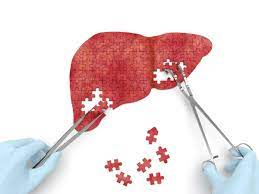

| Fabricación | |
| Este órgano se puede regenerar con el 25% de su tamaño, por lo que se puede donar una parte del hígaod para que luego se regenere, a través de las células son capaces de multiplicarse para regenerar el tejido después de que haya sido eliminado una parte. Las células principales de este tejido, llamados hepatocitos son las primeras células en reproducirse cuando detectan que es necesario. | |
|  | |